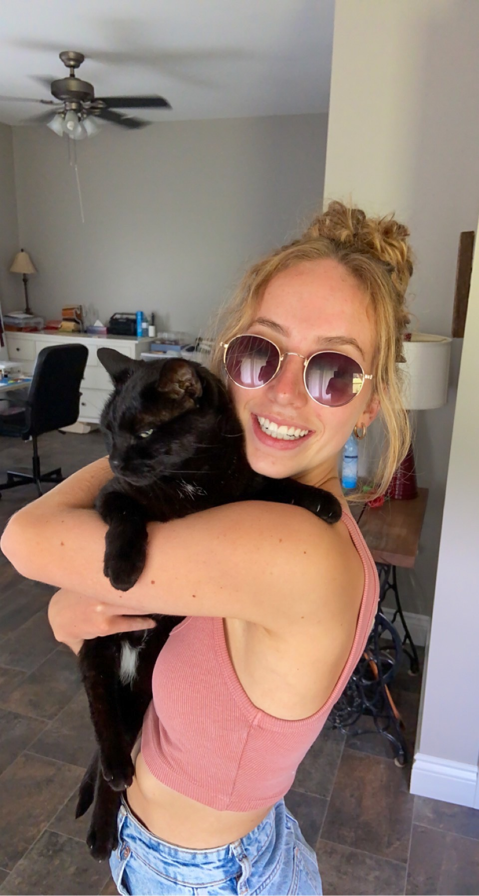

Hi, my name is Maddie I was previously enrolled at Trent University for the forensic science program. After two years in that program, I realized it wasn't the program for me, I needed something with more creative freedom. I decided to switch to Algonquin College for the interactive media design (IMD) program. This program has allowed me to have the creative freedom I desire and the careers in this field are more suitable to the lifestyle I want to live.
In the future I want to be a digital media freelancer. My goal is to work with small businesses and create and manage their digital media such as their website, social media, photography, videography, etc. There are several reasons I would like to be aa freelancer...
- It allows me to pick my own schedule.
- I like the versatility of this field as there is potential for me to work on a range of projects/media types.
- I like the idea that the 'salary' in this field relies on how much work you put into it. So if i work really hard there is potentially alot of money in this field.
- There is high demand for this career.
- I can work anywhere in the world (as long as I have wifi).
I went through a bit of a rough time this past year so I included the following quote. It's one of my favourite quotes, it's kind of just a reminder to stay true to yourself and be the best version of yourself.
Stay soft - don't let the things that have hurt you turn you into a person you are not. Trinity Masuka
